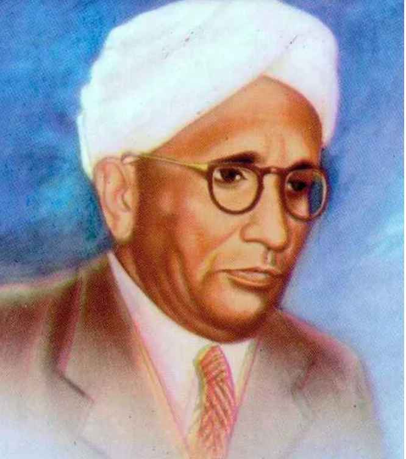

Sir Chandrasekhara Venkata Raman was an Indian physicist who made important contributions to science. He is best known for discovering the Raman Effect, which explains how light changes when it passes through different materials.
• Discovered the Raman Effect in 1928.
• Made major contributions to physics and scientific research.
• Inspired many students and scientists in India and around the world.
• Nobel Prize in Physics (1930).
• Bharat Ratna (1954).
• Many international scientific honors.